Click here to download the PDF version of this tutorial.
This second module explores an alternative approach to reconstruct genomic data from NGS reads – de novo Assembly. Rather than using a mapping strategy to guide the assembly of sequence reads, de novo Assembly attempts to reconstruct genomes by exploring read overlapping and contiguity. This approach is more informative when we are dealing with a new species for which there is no reference genome or even a new strain of a well-known pathogen [14, 15].
However, the process of assembling reads into contigs can be challenging due to the huge number of reads produced from random sampling of the genome being studied. Additionally, high sequencing error rate, repeat regions/patterns and uneven sequencing depth are some of the problems that can influence the correct assembly of a genome. There are three major approaches for assembling reads: i) overlap-and-extend; ii) string graph; and iii) de Bruijn graphs. Overlap-and-extend methods iteratively attempt to first find read overlaps (where the suffix of a read is equal to the prefix of another read with a length that meets a defined threshold) and then extend the first read constructing a longer read (SSAKE, VCAKE and SHARCGS). The String Graph based assemblers constructs a string graph for every read in which each read is a vertex and there is an edge from a vertex to another if there is read overlap (Edena and BOA). These first two approaches are more susceptible to sequencing errors and can lead to more memory consumption [15, 16].
De Bruijn Graph-based algorithms are presently the most widely used approaches and are used in several software packages for genome assembly from NGS reads (e.g. Velvet, SOAPdenovo, SPAdes, etc) [17, 18]. Graphs are mathematical structures used to model pairwise relations between objects. In essence, each vertex represents a length-k substring (k-mer) in a read and there is a directed edge from vertex u to vertex v if u and v are consecutive k-mers in a read, i.e., the last k–1 nucleotides of the k-mer represented by u is the same as the first k–1 nucleotides of the k-mer represented by v [16].
Before going to the computational part we can do a simple and quick hands-on exercise that covers the basics of de Bruijn Graph based assemblies. A concept that will be important to retain is the concept of k-mer. As explained above the k-mer is a substring of a read and, a read can thus have multiple k-mers depending on the k-mer length (sometimes this is also referred as hash length or word length). For example, if you have a 50bp read it can only yield one 50bp k-mer, but it can yield two 49bp k-mers [17]. The caveat of this approach is that the k-mer length you choose must always be below the read-length of your data.
Let’s consider the following reads:
CTACG
ACGAT
GGCTA
ATAGC
CGATA
We can use a simple overlap and extend approach but let’s use the de Bruijn Graph approach to find k-mers. List all 4 bp k-mers from the reads above.
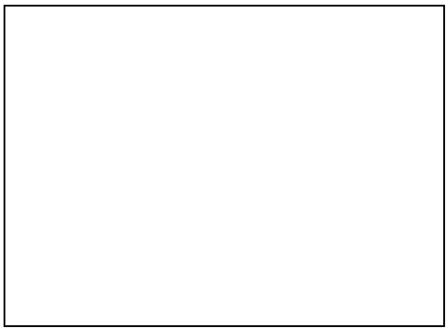
First, link the k-mers that only differ by k-1 nucleotides. Then, you can try to establish links by creating a path between the nodes to find your contig – each k-mer is a node. The two main rules are: visit all nodes at least once and use the minimal path length.
Write the final contig.
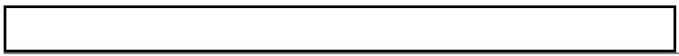Now that you have attempted to do de novo assembly by hand it is time to use real data. We’ll continue with the PT000033 strain from Module 1 but, instead of mapping, we will do de novo assembly. Let’s go to Module2 directory by typing (from your home directory) and run Trimmomatic for the files:
$ cd Module2# Start by copying the files from the course_files directory: $ cp ../course_files/PT000033_*.fastq.gz . # Let us decompress the files: $ gzip -d PT000033_1.fastq.gz $ gzip -d PT000033_2.fastq.gz # Now let’s run Trimmomatic:$ trimmomatic PE -phred33 PT000033_1.fastq PT000033_2.fastq PT000033_1_trimmed_paired.fastq PT000033_1_trimmed_unpaired.fastq PT000033_2_trimmed_paired.fastq PT000033_2_trimmed_unpaired.fastq LEADING:3 TRAILING:3 SLIDINGWINDOW:4:20 MINLEN:36
Now, inside this sub-directory (you can see its content using the ls command) you will find the fastq, including the files produced by Trimmomatic. In this exercise we will use Velvet to assemble the PT000033 strain from sequence reads without using a reference genome [19].
You can also find in this sub-directory the reference genome. Although we will not use it in the assembly process, this genome file will be necessary in Exercise 3 for ordering the contigs.
This will be a simple approach to computational assembly using Velvet, which relies on two main programs: velveth and velvetg. velveth takes in a number of sequence files, produces a hash table, then outputs two files in an output directory (creating it if necessary), Sequences and Roadmaps, which are necessary to velvetg. The file formats supported by velveth include FASTA, FASTQ, compressed (gunzip) FASTA/FASTQ files, SAM/BAM, etc. Moreover, there are different read categories that can be specified depending on the data: -short (default), -shortPaired (for paired-end short read data), -short2 (to specify a second library), -shortPaired2 (idem), -long (for Sanger, 454 or even reference sequences) and -longPaired.
The second program, velvetg, is the core of Velvet where the de Bruijn graph is built and then manipulated.
Perhaps the most important parameter you must specify is the hash length or k-mer length. In fact, it cannot be inferred from the data such as other parameters that we are setting to auto or using default values. The two main rules for choosing the k-mer length are: it must be an odd number, to avoid palindromes (if you specify an even number Velvet will automatically decrease it); and, it must be inferior to the read length. Longer k-mers generally provide higher specificity but decrease coverage (and therefore sensitivity).
But, let’s start assembling. Inside Module2 directory type:
$ velveth PT000033_41 41 -fastq -shortPaired PT000033_1_trimmed_paired.fastq PT000033_2_trimmed_paired.fastq -fastq -short PT000033_1_trimmed_unpaired.fastq PT000033_2_trimmed_unpaired.fastq
# This first command creates the hash table in a new directory PT000033_41 (it will contain the assembly using a k-mer length of 41)
$ velvetg PT000033_41 -exp_cov auto -cov_cutoff auto
# This second command produces the graph and assembles the genome. You can find your files in the newly created PT000033_21 sub-directory.
Notice that in the first command you specified two distinct libraries: a paired library present across two files using the -shortPaired option and two unpaired libraries using the -short option. We could have just used the paired library but in this way we do not loose good quality data.
Upon velvetg completion look at the last line summarising the results. Also, you can run the following command to find out the number of contigs and some additional statistics:
$ assemblathon_stats.pl ./PT000033_41/contigs.fa
This command will output additional statistics. The assemblathon_stats.pl (Keith Bradnam, UC Davis) is a Perl written script that calculates some statistics for assemblies and scaffolds (we will talk about this ahead). It was written for the Assemblathon contests to assess state-of-the-art methods in the field of genome assembly [14]. You can look at some of these metrics and take note in the table below. The output will be similar to the one below and as we are only working with assembled contigs we can focus on the third section only:
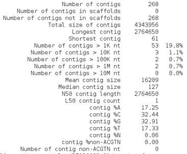What do these parameters mean?
• Contigs: number of contigs? Which is better, more or less contigs?
• N50: Length of the contig that contains the middle nucleotide when the contigs are ordered by size.
• Longest contig: length of the longest contig;
• Total size: Sum of all contigs lengths.
How many contigs are larger than 10 Kb? __________________________
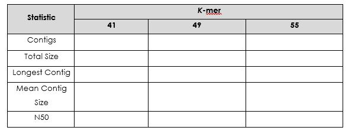Repeat this exercise using a k-mer length of 49 and 55 (don’t forget to change the directory name: PT000033_41 to PT000033_49 or PT000033_55).
Which is the best k-mer length? ___________________
Upon completion of these commands you should have obtained your contigs. Each of the three assemblies are located in the respective folders. Let’s look at the assembly:
$ cd PT000033_49
# This will get you inside the PT000033_49 subdirectory, assuming you are inside the Module2 directory. Recall that this is the assembly carried out using a k-mer length of 49bp.
# Then:
$ more contigs.fa
In which format are the contigs’ sequences? ________________________
Besides the contigs file you will find other files containing the sequences, graphs and other files necessary if you want to perform a faster re-assembly of your data using different parameters.
But now that you have the contigs we can order these and/or join them in Exercise 3.
Graph Visualization:
Under the assembly directories you can find the file LastGraph. It contains the final Graph of your assembly. It is possible to visualize and navigate this graph using the software Bandage. This is a program that can be installed on Windows, MacOS or Linux machines and it creates interactive visualizations of assembly graphs [20].
To open Bandage double-click on its shortcut at the desktop or, from any terminal window just type:
$ Bandage
This will start the Bandage window, go to File > Load Graph and select the LastGraph file from an assembly at your choice to open the Graph of your assembly. To visualize this Graph click on Draw Graph. Since this is a bacterial genome you can draw the entire graph. You can compare the different assemblies using this approach.
The graph for your assembly will show the different nodes and be similar to this:
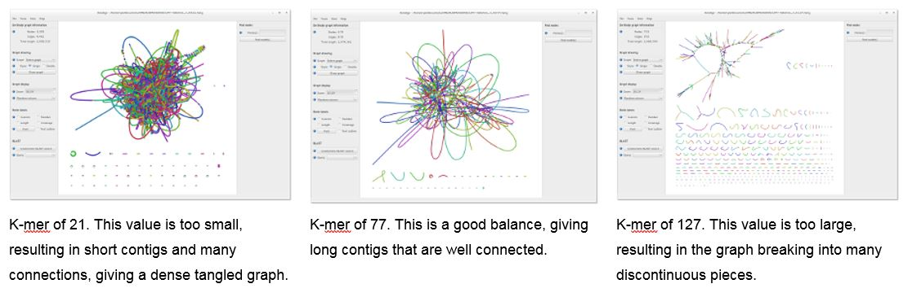Other software for assembly statistics/QC:
There are more complete alternatives to evaluate the assembly quality, namely, using BUSCo or QUAST. QUAST for example compares against a reference genome, provided that one exists. Busco offers another alternative by checking the degree of representation of a set of core genes in each assembly.
You can run QUAST in this VM by:
$ cd PT000033_41
$ quast.py -o quast_qc -r ../NC000962_3.fasta contigs.fa
# Inside the newly created quast_qc directory look at the report files:
$ cat quast_qc/report.tsv
For BUSCO analysis in the same directory:
$ conda activate busco
$ busco -i contigs.fa -l actinobacteria_phylum_odb10 -o busco_analysis -m genome
$ conda deactivate
Additional notes:
The assembly exercise carried out in this exercise is a simplistic approach. In a real situation it is necessary to carefully estimate several parameters such as the expected coverage cut-off, expected coverage, k-mer length, insert size, etc. VelvetOptimiser script (https://github.com/tseemann/VelvetOptimiser) deals with these problems and carries out several Velvet assemblies while simultaneously adjusting for several of these parameters. You can input a range of K-mer lengths .
A different approach is implemented in SPAdes by using multi k-mer assemblies where you specify several k-mer lengths [18]. SPAdes takes as input paired-end reads, mate-pairs and single (unpaired) reads in FASTA and FASTQ. Besides SPAdes other assemblers implement a multi K-mer strategy (IDBA, Megahit, GATB-Pipeline) which always performs better than single K-mer strategies. The downside, and the main reason to why we do not used this strategy in this module, are the longer run times and the fact that these are more resource-demanding softwares.
In this next exercise we will pick up from where we left in the previous exercise. Now that you have your contigs assembled from raw sequence reads we can order the contigs obtained using a suitable reference genome for this process (usually the closest high-quality finished genome). In this exercise we will use the reference genome used in Module 1 (M. tuberculosis H37Rv, GenBank Acc: NC000962.3). This reference-aided contig ordering becomes important as we progress towards discovery and comparative genomics processes. Besides contig ordering, the process of joining the contigs is called scaffolding. Contigs within a scaffold are separated by N letters which represent gaps in the sequence. A scaffold is therefore chains of ordered contigs created using information about their relative position against a reference genome.
The software we will be using for this task at hand is called ABACAS [21]. This is a stand-alone program intended to rapidly contiguate (align, order, orientate), visualize and design primers to close gaps on shotgun assembled contigs based on a reference sequence. ABACAS is implemented in Perl and requires MUMmer and (optionally) BLAST installed on the local machine.
Let’s order the contigs by simply typing the following:
$ cd PT000033_49
$ cp ../NC000962_3.fasta ./
$ abacas.pl -r ../NC000962_3.fasta -q contigs.fa -p promer -b -d -a -c
# Abacas will align the contigs present in the contigs file (contigs.fa) against the reference genome and will do so based on the promer algorithm
You can choose to either do an alignment based on NUCmer (option: -p nucmer) or PROmer (option: -p promer) algorithms. NUCmer is a Perl script pipeline for the alignment of multiple closely related nucleotide sequences. PROmer (PROtein MUMmer) is a close relative to the NUCmer script. It follows the exact same steps as NUCmer and even uses most of the same programs in its pipeline, with one exception - all matching and alignment routines are performed on the six-frame amino acid translation of the DNA input sequence. This provides promer with a much higher sensitivity than nucmer because protein sequences tend to diverge much slower than their underlying DNA sequence. Therefore, on the same input sequences, promer may find many conserved regions that nucmer will not, simply because the DNA sequence is not as highly conserved as the amino acid translation.
By the end of this ordering and scaffolding process, ABACAS will show a screen like the one below:
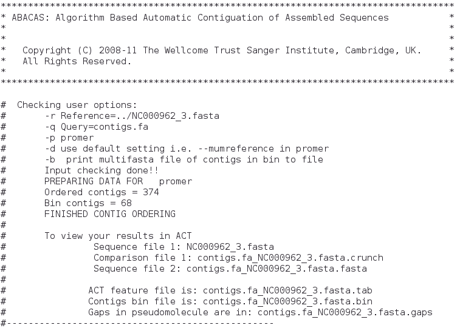Now, what is ACT? ACT stands for Artemis Comparison Tool, a Java-written application for displaying pairwise comparisons between two or more DNA sequences (basically ACT has several Artemis windows) [22]. It can be used to identify and analyze regions of similarity and difference between genomes and to explore conservation of synteny, in the context of the entire sequences and their annotation. It can read complete EMBL, GENBANK and GFF entries or sequences in FASTA or raw format.
We can go ahead and have a look at the comparison that ABACAS already and present on the comparison file (*.crunch).
ACT can be started from any terminal window by typing:
$ act
ACT will start its main window, go to File > Open and select the files that ABACAS indicates from comparison:
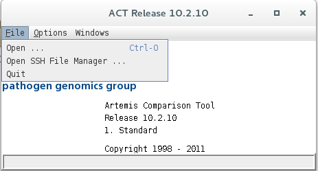 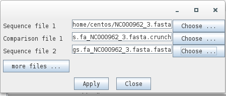Sequence 1: NC000962_3.fasta
Comparison file 1: contigs.fa_NC00096_3.fasta.crunch
Sequence 2: contigs.fa_NC00096_3.fasta.fasta
Sequence 2 file now contains your contigs stitched to one another and separated by N’s (scaffold) highlighting possible gaps in the assembly or regions not present in the reference genome. Look at the ACT comparison.
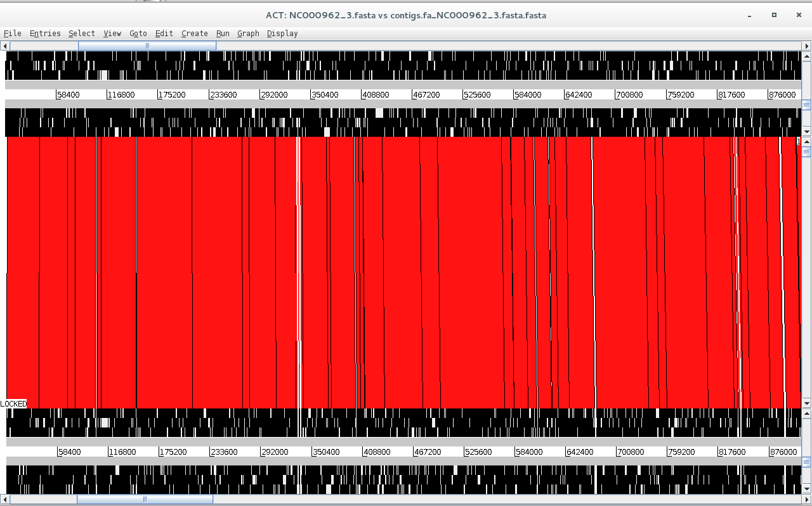Is synteny conserved across these two genomes? What did you expect from M. tuberculosis?
Besides looking at the synteny of these large regions we can look at the conservation of gene synteny and distribution across this comparison. To do this we can read an entry onto of the sequences by going to File > NC000962_3.fasta > Read an Entry…
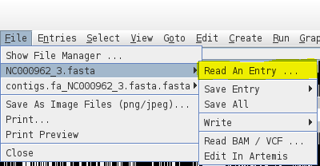You can open the NC000962_3.gbk file which is in the Genbank format, it contains the sequence along with genome annotation. Here, we are reading it onto the NC000962_3.fasta sequence and since the sequence is already present ACT will read the annotation only. You can see the annotation appearing on the top part of the comparison window.
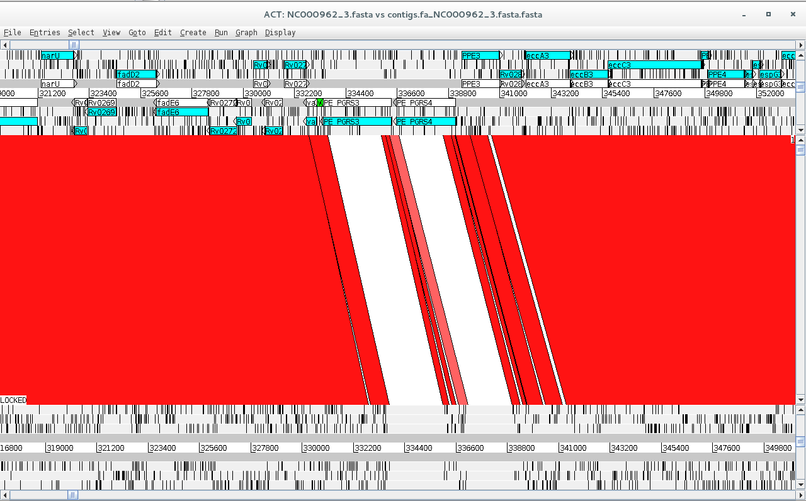Additional notes:
Contig ordering can also be carried out in Mauve, a genome aligner tool implemented with a Graphical User Interface (GUI), and therefore, more user friendly [10]. The advantage of ABACAS over Mauve is that you can more easily implement contig ordering and scaffolding on a script that you run through the command-line.
For comparison purposes Mauve is also a great tool for multi-genome alignment (in particular using its Progressive Mauve algorithm). You can align your contigs against the contigs of other assembled strains, a reference strain and so on. Furthermore, during the alignment process, Mauve identifies conserved segments that appear to be internally free from genome rearrangements. Such regions are referred to as Locally Collinear Blocks (LCBs).
Also, ABACAS is part of a software bundle developed at the Wellcome Trust Sanger Institute called PAGIT [8]. PAGIT is designed to finish high quality draft genome and, includes: ABACAS; IMAGE, an iterative approach for closing gaps in assembled genomes using mate pair information; iCORN, that enables errors in the consensus sequence to be corrected by iteratively mapping reads to the current assembly; and RATT, a tool to transfer the annotation from a reference genome, or an earlier assembly, onto the latest assembly.
You can also give CONTIGuator or RagTag a try [11, 12]!
In the last exercise of this module we will attempt to find features along the scaffold created earlier and add some information concerning it to genome. This is a process called annotation and, it is necessary if we want to take full advantage of having the genome sequence and move towards functional genomics [2]. This annotation process is made with biologically relevant information that can range from gene models, functional data (including gene ontology or “Kyoto Encyclopedia of Genes and Genomes”, KEGG, pathways) to epigenetic or microRNA modifications. Generally, this procedure is limited to the annotation of protein coding sequences and may include the annotation of ribosomal and transfer RNAs.
We can take three different approaches to annotation: web-based tools (RAST, NCBI annotation); command-line tools that perform de novo gene discovery (Prokka and DIYA); and, transfer of annotation data from a reference genome such as the one we used in the previous exercise (RATT, BG-7) [8, 13, 14].
Moreover, annotation will imply a different format other than FASTA. While the latter only stores the sequence, it is possible to have a second file in the GFF (General Feature File) format containing the annotation. Alternatively, we can combine these data on a GenBank file. You can look up online the structure of both formats.
Prokka Annotation:
In this exercise we will take the first two approaches and we will start with annotation with Prokka, a software tool to annotate bacterial, archaeal and viral genomes quickly and produce standards-compliant output files [13]. Prokka uses a variety of databases when trying to assign function to the predicted CDS features. It takes a hierarchial approach to make it fast. The initial core databases are derived from UniProtKB.
To start the annotation let’s type:
$ cd /home/centos/Module2/PT000033_49 $ prokka --outdir ./PT000033_prokka --prefix PT000033 contigs.fa_NC000962_3.fasta.fasta # Alternatively, for a monomorphic species such as Mycobacterium tuberculosis you can opt by transferring the annotation from M. tuberculosis H37Rv reference strain using the –-proteins option: $ cp ~/course_files/NC000962_3.gbk . $ prokka --outdir ./PT000033_prokka --prefix PT000033 --proteins NC000962_3.gbk contigs.fa_NC000962_3.fasta.fasta
Here, you have carried out a simple annotation procedure using Prokka’s core database. With the --outdir option you specified the creation of a new output directory and the --prefix option allow you to set the prefix name of your files. You can look at other Prokka options by simply typing:
$ prokka
Meanwhile the annotation process will take about 16 minutes, but when finished you can find the new PT000033_prokka directory. Let’s go inside:
$ cd PT000033_prokka
Prokka will have outputted the following files:
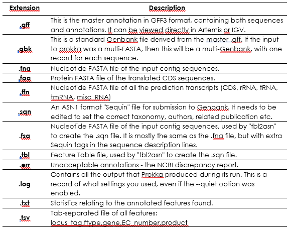Next, open up Artemis:
$ art
And go to File > Open and open the PT000033.gbk file:
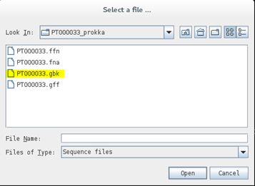You can see that your scaffold from the previous exercise is now annotated:
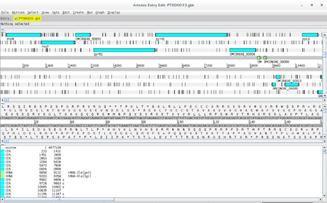As a side note, to improve Prokka annotations it is possible to use user-define databases from closely related genomes.
RAST Annotation:
RAST (Rapid Annotation using Subsystem Technology) is a fully-automated service for annotating complete or nearly complete bacterial and archaeal genomes available at http://rast.nmpdr.org/. RAST is designed to rapidly call and annotate the genes of a complete or essentially complete prokaryotic genome [14]. RAST, Rapid Annotations based on Subsystem Technology, uses a "Highest Confidence First" assignment propagation strategy based on a more sophisticated database based on manually curated subsystems and subsystem-based protein families that automatically guarantees a high degree of assignment consistency. RAST returns an analysis of the genes and subsystems in your genome, as supported by comparative and other forms of evidence. Despite being an on-line tool, it is possible to use RAST on the command-line through the myRAST toolkit, therefore allowing the integration of RAST in scripts and pipelines [14].
To use RAST you need to set up a free account.
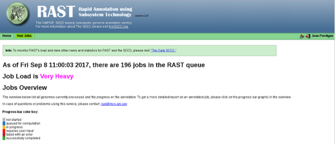Once you have registered to RAST and your account is active, log in to your RAST homepage and go to Your Jobs > Upload New Job.
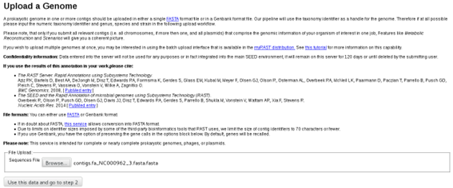On this next screen select the scaffold file(contigs.fa_NC000962_3.fasta.fasta). On the next screen you can review some sequence statistics before proceeding:
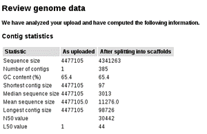Below, in this same page you will be asked to introduce some information concerning the organism. Since we are working with Mycobacterium tuberculosis you can enter NCBI Taxonomy Id 1773 and click on the “Fill in form based on NCBI Taxonomy-ID” button as it will fill the form automatically:
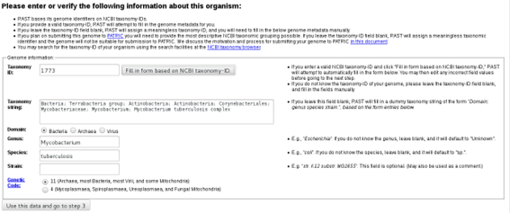In the last step you can chose some RAST annotation parameters. We will go with the default parameters:
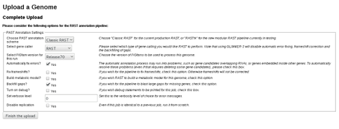Genome annotation using RAST may take half a day, an entire day or longer depending on server availability. Upon completion you can go to the Jobs Overview page where you can find your submitted jobs:
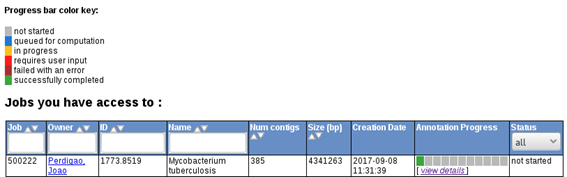 rast6.pngIf your job is already completed you can click on view details, which will give you access to RAST output files. These files include, GenBank, GFF, FASTA, EMBL and even spradsheets (Excel and tsv formats) containing the list of features, along with genome coordinates, orientation, gene ID, gene product, nucleotide and protein sequences, etc.
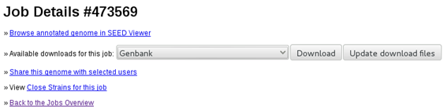A RAST annotated PT000033 genome is available for you under the RAST_output sub-directory in Module2 directory. Open a terminal and type:
$ cd ./Module2/RAST_output # Then start artemis: $ art
Then open the GenBank file as you did with the Prokka annotation file. Is this annotation better?
Also, try to open the Excel spreadsheet with LibreOffice Calc in the Virtual Machine. LibreOffice Calc is an Open-Source alternative to Microsoft Excel. You can easily extract gene information from your strain using this file as well (and maybe even reading it into R!).
1 Baker U, Tomson G, Some M, et al. 'How to know what you need to do': a cross-country comparison of maternal health guidelines in Burkina Faso, Ghana and Tanzania. Implement Sci. 2012; 7: 31.
2 Ekblom R, Wolf JB. A field guide to whole-genome sequencing, assembly and annotation. Evol Appl. 2014; 7: 1026-1042.
3 Chin FY, Leung HC, Yiu SM. Sequence assembly using next generation sequencing data--challenges and solutions. Sci China Life Sci. 2014; 57: 1140-1148.
4 Compeau PE, Pevzner PA, Tesler G. How to apply de Bruijn graphs to genome assembly. Nat Biotechnol. 2011; 29: 987-991.
5 Bankevich A, Nurk S, Antipov D, et al. SPAdes: a new genome assembly algorithm and its applications to single-cell sequencing. J Comput Biol. 2012; 19: 455-477.
6 Zerbino DR, Birney E. Velvet: algorithms for de novo short read assembly using de Bruijn graphs. Genome research. 2008; 18: 821-829.
7 Wick RR, Schultz MB, Zobel J, Holt KE. Bandage: interactive visualization of de novo genome assemblies. Bioinformatics. 2015; 31: 3350-3352.
8 Swain MT, Tsai IJ, Assefa SA, Newbold C, Berriman M, Otto TD. A post-assembly genome-improvement toolkit (PAGIT) to obtain annotated genomes from contigs. Nat Protoc. 2012; 7: 1260-1284.
9 Carver TJ, Rutherford KM, Berriman M, Rajandream MA, Barrell BG, Parkhill J. ACT: the Artemis Comparison Tool. Bioinformatics. 2005; 21: 3422-3423.
10 Darling AE, Mau B, Perna NT. progressiveMauve: multiple genome alignment with gene gain, loss and rearrangement. PLoS ONE. 2010; 5: e11147.
11 Galardini M, Biondi EG, Bazzicalupo M, Mengoni A. CONTIGuator: a bacterial genomes finishing tool for structural insights on draft genomes. Source Code Biol Med. 2011; 6: 11.
12 Alonge M, Lebeigle L, Kirsche M, et al. Automated assembly scaffolding using RagTag elevates a new tomato system for high-throughput genome editing. Genome Biol. 2022; 23: 258.
13 Seemann T. Prokka: rapid prokaryotic genome annotation. Bioinformatics. 2014; 30: 2068-2069.
14 Overbeek R, Olson R, Pusch GD, et al. The SEED and the Rapid Annotation of microbial genomes using Subsystems Technology (RAST). Nucleic Acids Res. 2014; 42: D206-214.
<<-HOME